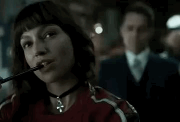

Roteiro Dinâmico
Grande parte dos filmes e séries são escritos antes mesmo de começarem as filmagens, mas com La Casa de Papel não foi exatemento assim. Durante a produção da série, os roteiros eram escritos enquanto a filmagem ainda estavam acontecendo, com os roteiristas fazendo adaptações na direção conforme o andamento da história.
Sete países, 300 lugares Toda a primeira temporada de La Casa de Papel foi gravada em Madrid, na Espanha, mas os episódios seguintes aconteceram em 300 localizações em outros seis países: Dinamarca, Itália, Panamá, Portugal, Tailândia e Reino Unido.
"La Casa de Papel": ranking dos 4 melhores personagens
- Professor

O mestre dos planos, a mente por trás de tudo e que ainda conseguiu arranjar uma namorada no meio do roubo.
Leia mais...
- Tóquio

A narradora da série e protagonista de muitos momentos de ação não poderia ser esquecida. Às vezes ela era um pouco chata? Sim, mas Tóquio é a alma de "La Casa de Papel".
Leia mais...
- Berlim

Berlim, sem dúvida, é um personagem polêmico. Ele está longe de ser um cara legal, vale lembrar que ele estuprou uma mulher na primeira temporada, mas sua história é bem importante para a série.
Leia mais...
- Denver

Personagem que só de existir já dá vontade de abrir um sorriso. Denver passou de um desajustado para um pai de família, sempre animando as pessoas e sem perder a fidelidade ao grupo.
Leia mais...
Frases de La Casa de Papel
"A morte pode ser a melhor oportunidade da vida."
"Muitas pessoas acreditam que só encontramos um amor verdadeiro em nossas vidas. Mas o que elas não percebem é que podemos ter várias vidas."
"Ou ambos ganhamos ou ambos perdemos."
"A namorada de um amigo é como uma cidade radioativa, embora 20.000 anos tenham se passado, ainda é um solo contaminado e você não entra."